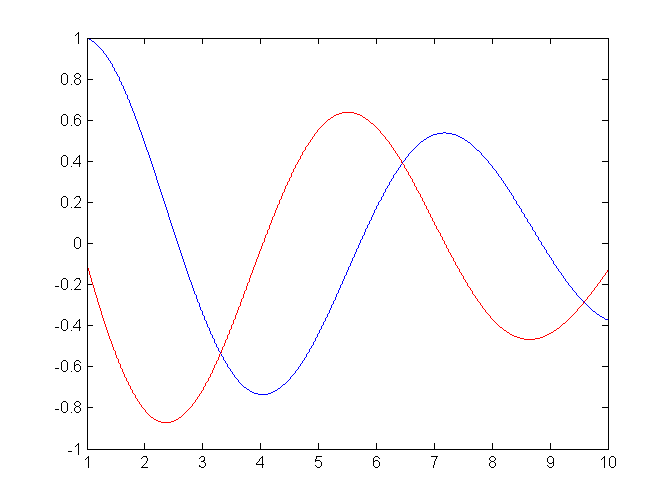
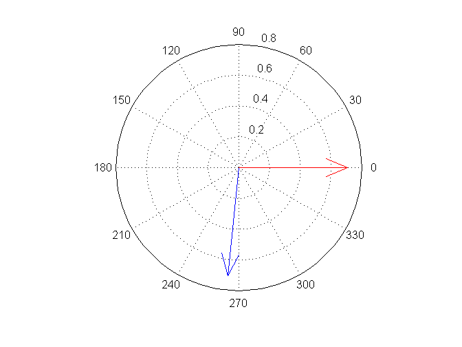

Exercise 9.1
Contents
Define a matrix A and calculate dr and frequency from the eigenvalues
A=[0 1
-1.01 -.2];
lam=eig(A)
w=imag(lam(1))
sig=real(lam(1))
freq=w/2/pi
dr=exp(sig/freq)
lam =
-0.1000 + 1.0000i
-0.1000 - 1.0000i
w =
1.0000
sig =
-0.1000
freq =
0.1592
dr =
0.5335
Exercise 9.2 Calculate the time domain response
x0=[1;-.1];
dt=0.001;
t=1:dt:10;
X=zeros(2,length(t));
X(:,1)=x0;
for i=2:length(t)
X(:,i)=X(:,i-1)+dt*A*X(:,i-1);
end
plot(t,X(1,:))
hold on
plot(t,X(2,:),'r');

9.4 Calculate the eigenvectors and compare with the time domain response
[v,e]=eig(A);
figure
compass(v(:,1))
hold on
compass(v(2,1),'r')
